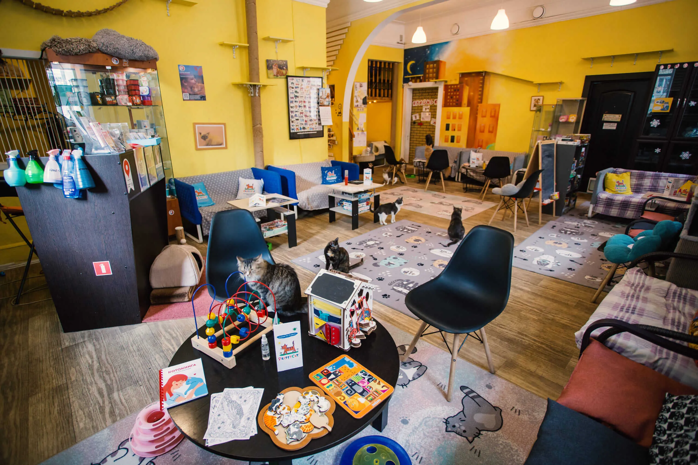
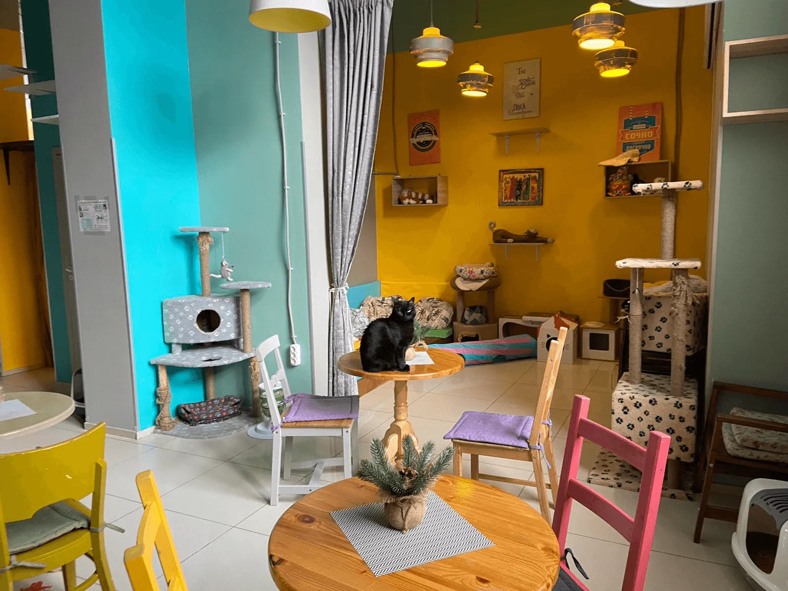
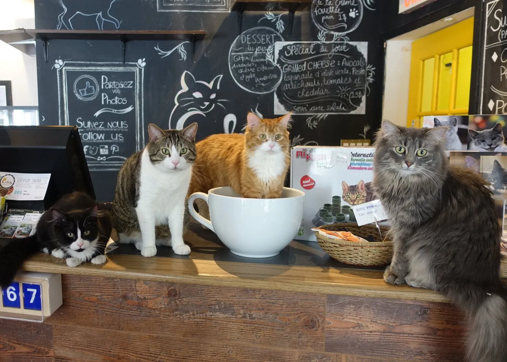
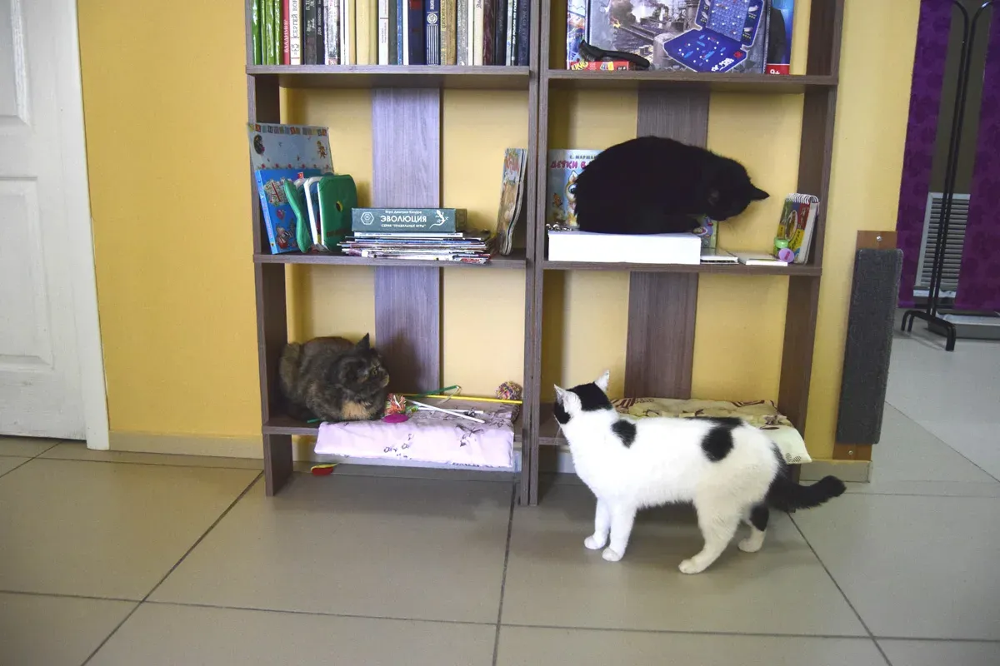
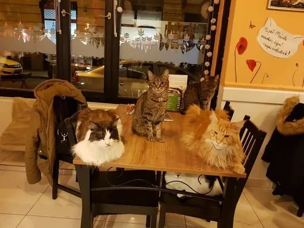
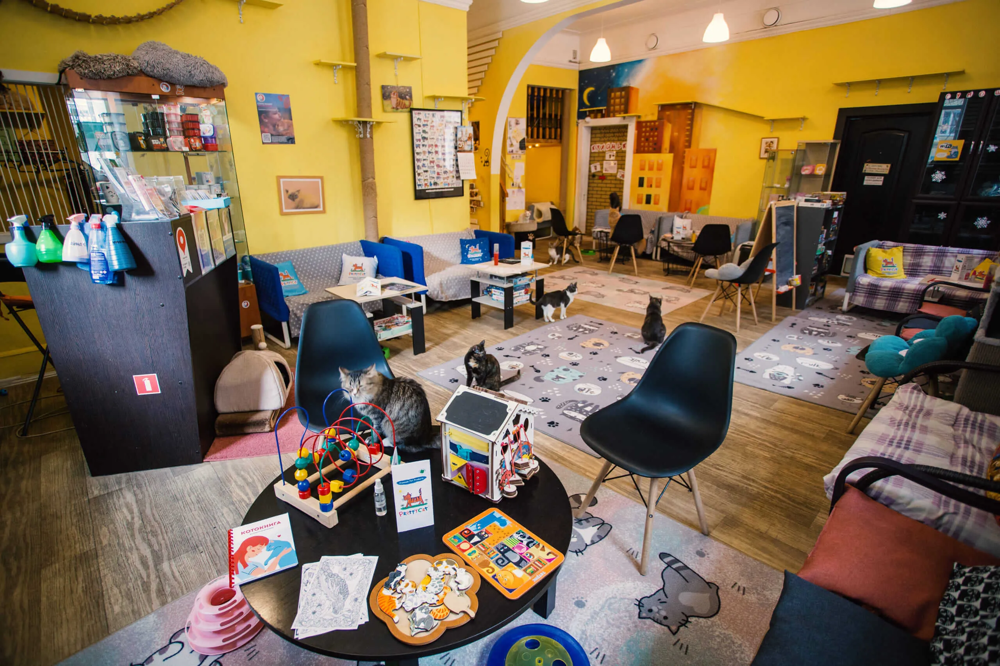
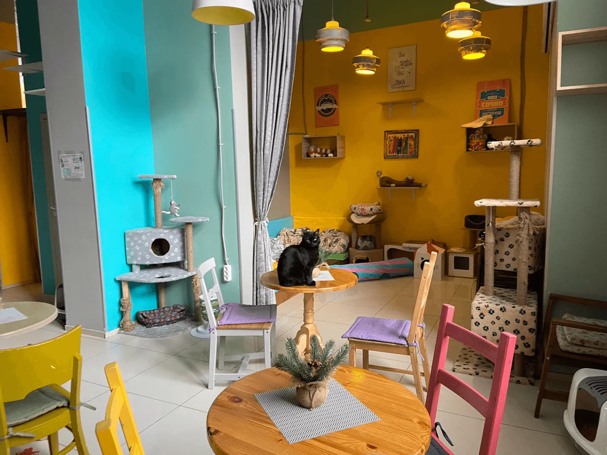
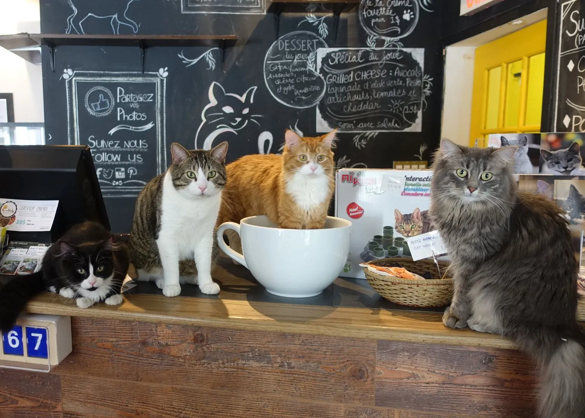
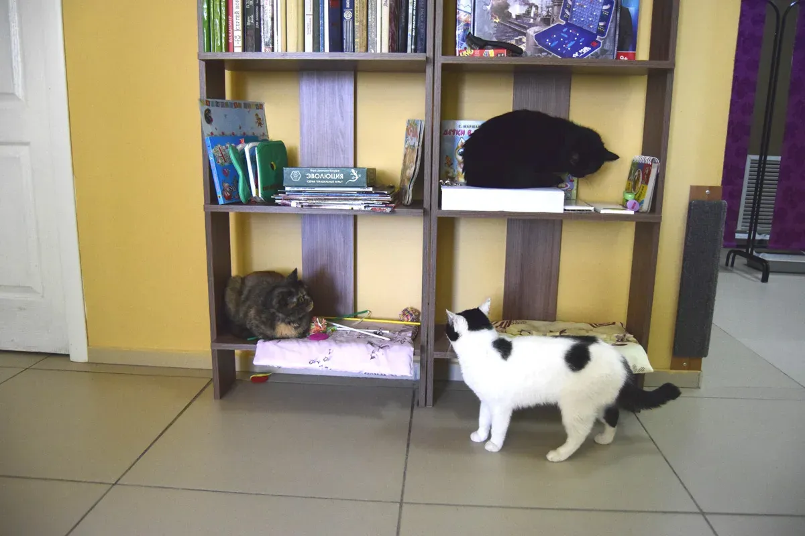
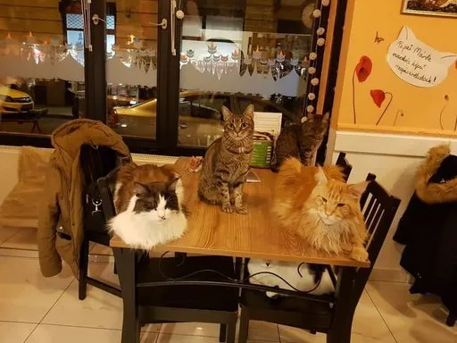

О котокафе
Идея кошачьего кафе, или «котокафе», родилась не как просто милая причуда, а как остроумный ответ на одиночество и строгие правила аренды жилья в больших городах. Первое в мире заведение официально открылось в Тайбэе (Тайвань) в 1998 году и быстро завоевало бешеную популярность в Японии. В Токио, где многие жители снимают крошечные квартиры, в которых запрещено держать животных, такие кафе стали настоящим оазисом. Посетители получали возможность провести время в уютной обстановке, наслаждаясь кофе и общаясь с пушистыми терапевтами.
А вот само это котокафе Барсик, — дело рук и сердца удивительной женщины, Евдокии Григорьевны . Сложно поверить, что эта милая, веселая женщина когда-то была блестящим хирургом, чьи руки годы спасали человеческие жизни. Выйдя на пенсию, она не стала копить скуку на диване, а решила воплотить свою давнюю мечту — создать место, где люди и кошки будут дарить друг другу радость. Евдокия Григорьевна лично выбирала каждую подушечку, каждую когтеточку и, конечно, каждого пушистого жителя. Она знает историю всех своих питомцев — кого подобрала на улице, кого взяла из приюта, и с какой лаской каждый из них отвечает на человеческое внимание.
 








